3단 토큰 구조: 왜 Brand·Alias·Mapped일까요
이 영상은 발표자가 2024년에 여러 편으로 나눠 올린 '디자인 시스템 만들기' 시리즈를 한 편으로 다시 찍은 거예요. 끝까지 따라가면 디자인 토큰 한 벌, 간단한 스타터 디자인 시스템, 그리고 그걸 라이브러리로 발행하는 방법까지 손에 들어와요. 발표자는 이 시스템이 '가장 보기 좋은 시스템'은 아니라고 여러 번 말해요. 개념을 익히고 각자 키워 나갈 출발점이라는 뜻이에요.
3단 구조와 2단 구조
토큰 구조를 짜는 방식은 크게 두 가지예요. 아래 슬라이드 왼쪽이 UI(User Interface) Collective가 쓰는 3단 구조(Brand → Alias → Mapped)이고, 오른쪽이 많은 공개 피그마 키트가 쓰는 2단 구조(Primitive → Semantic)예요. 발표자 말로는 Primitive가 Alias에, Semantic이 Mapped에 가깝고, 2단 구조는 Brand와 Alias를 하나로 합친 모양이에요.
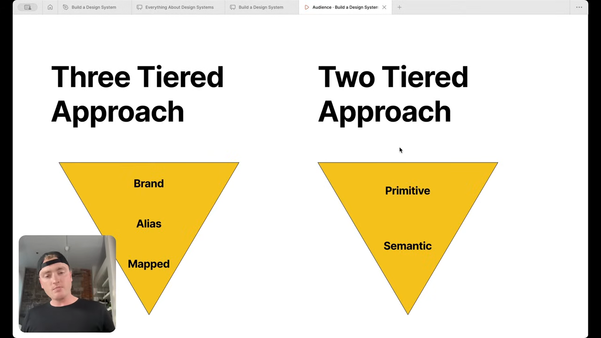
2단 구조가 틀린 건 아니라서, 이미 쓰고 있다면 처음부터 다시 만들 필요는 없다고 해요. 다만 브랜드가 여러 개가 되는 순간 한계가 드러나요. UI Collective는 피그마 변수가 나오기 전, Tokens Studio 플러그인으로 토큰을 입히던 시절부터 5년 가까이 3단 구조를 써 왔대요.
한 색이 세 단계를 거쳐 버튼에 닿기까지
영상에서 실제로 만든 값으로 따라가 보면 구조가 바로 보여요. Brand의 purple/500은 그냥 헥스 값이에요. Alias가 여기에 'Primary의 기준색'이라는 역할을 주고, Mapped가 그 역할을 '버튼 배경', '링크 글자', '포커스 테두리' 같은 쓰임새에 연결해요. 컴포넌트는 Mapped만 바라봐요.
발표자는 이 구조를 나무에 빗대요. Brand는 뿌리, Alias는 줄기, Mapped는 멀리서도 보이는 잎이에요. 뿌리가 단단해야 그 위가 자라요. 나무 그림은 다음 섹션들에서 단계가 하나씩 채워지며 다시 나와요.
Brand 컬렉션: 이름 없는 날값만 담아요
Brand 컬렉션의 원칙은 한 문장이에요. '모든 것을 가장 순수한 형태로' 둬요. 아래 슬라이드처럼 색은 이름 없는 스케일(Red-100, Red-200…)로, 폰트는 'Inter → Light, Regular, Medium, Bold' 같은 날값으로만 담아요. 아직 어떤 색에도 역할을 주지 않아요.
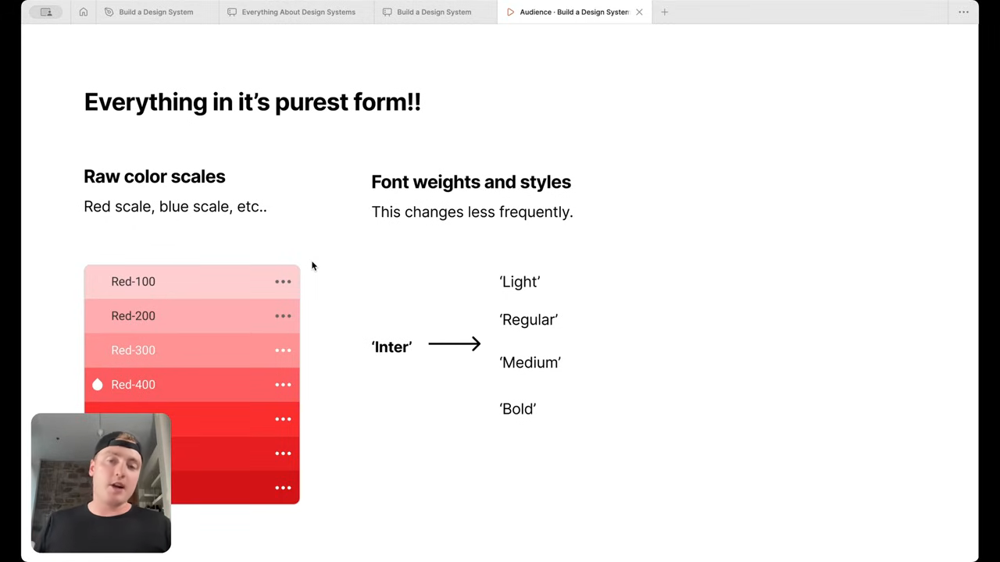
여기에 들어가는 건 세 가지예요. 색 스케일, 폰트 패밀리·굵기, 그리고 하나의 큰 숫자 스케일이에요. 폰트는 자주 바뀌지 않아서 Brand에 두지만, 멀티 브랜드라면 Alias로 옮긴다고 해요.
색은 작게 시작해요
캔버스에는 보라, 빨강, 초록, 회색, 주황, 파랑 여섯 스케일이 있어요. 원래 있던 분홍과 노랑은 쓸 일이 없다며 지웠어요. UI Collective를 예로 들면 브랜드 보라, 폼 에러용 빨강, 성공용 초록, 글자용 회색, 경고용 주황, 정보용 파랑이에요. 처음부터 '색 스케일 400개에 색 900개씩' 만드는 건 아무에게도 도움이 안 된다고 해요.
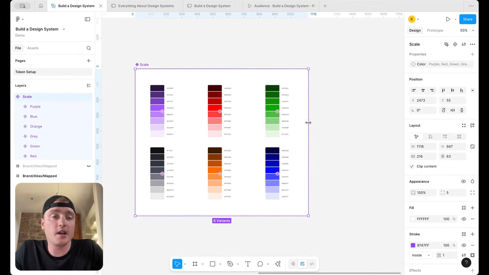
이름은 100 단위로 붙여요. red-100에서 red-700까지 숫자가 클수록 진해요. 이렇게 하면 나중에 끼워 넣기가 쉬워요. 접근성 검사에서 red-100보다 밝은 색이 필요하면 red-50을, 200과 300 사이가 필요하면 250을 추가하면 돼요.
불투명도로 스케일을 뽑는 법
발표자는 색 팔레트 생성기를 믿지 않고 스케일을 직접 만들어요. 페이지 배경을 흰색으로 두고, 기준색 사각형을 여러 개 복제해 불투명도를 80·60·40·20·10%로 낮춰요. 아래 화면 왼쪽 사각형들이 그렇게 흐려진 색이에요. 이 색을 스포이트로 찍어 오른쪽처럼 불투명한 헥스 값으로 옮겨요. 스케일 안에 투명도가 있는 색을 두지 않기 위해서예요.
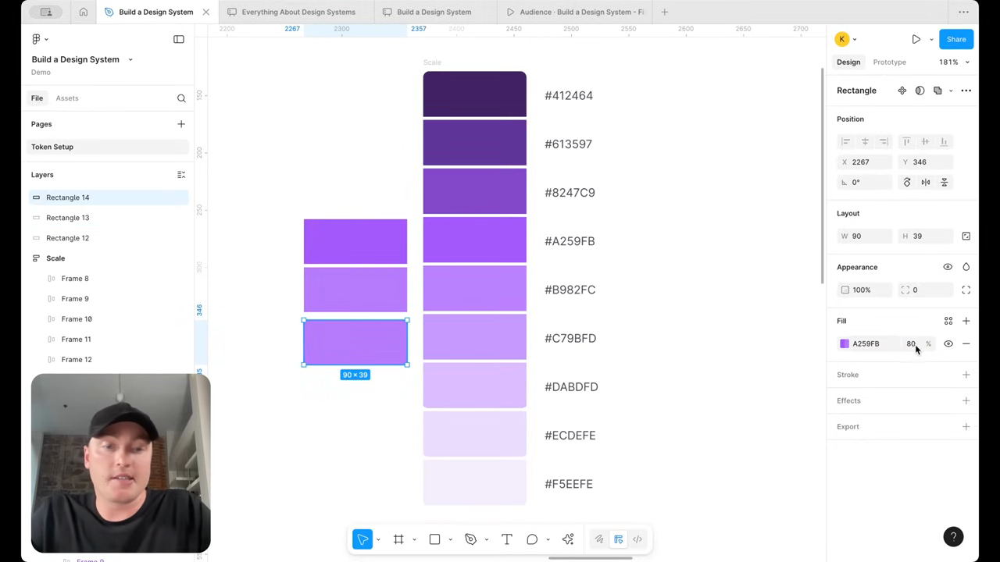
더 진한 쪽은 배경만 검은색으로 바꿔요. 같은 방법으로 불투명도를 낮추면 이번엔 색이 하얘지는 대신 어두워져요. 아래 화면에서 검은 사각형 위에 올린 보라가 그 예예요.
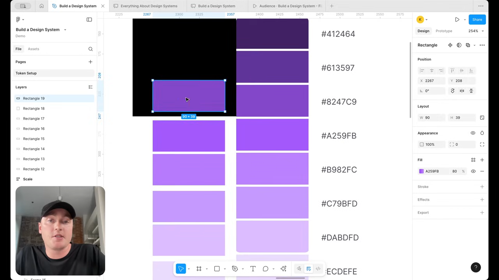
이름 붙이는 규칙이 하나 더 있어요. 20% 간격을 그대로 따른 색은 100 단위 이름(100, 200…)을 받아요. 마지막 한 색처럼 10%로 간격을 깨면 100 단위가 될 수 없어서 50을 받아요. 그래서 처음엔 100~900으로 이름을 붙였다가, 가장 밝은 색을 50으로 바꾸고 900을 지웠어요.
이렇게 만든 보라를 변수로 옮긴 결과가 아래 화면이에요. 오른쪽 Brand 컬렉션의 purple 그룹에 50부터 800까지 아홉 칸이 있고, 기준색 500의 값이 #A259FB예요. 빨강, 초록, 회색, 주황, 파랑도 그룹을 복제해 같은 방식으로 채워요.
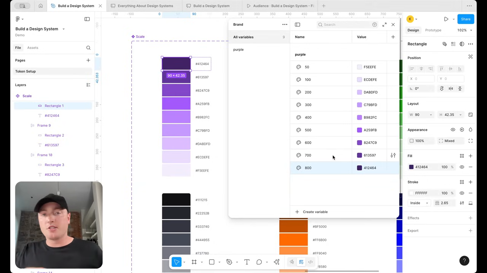
폰트도 변수로 둬요
폰트는 문자열 변수로 만들어요. Font family 그룹의 값은 실제 폰트 이름과 글자 하나까지 같아야 해요. 'Inter'라고 쓰면 피그마가 폰트로 알아보지만, 'Inter1'처럼 바꾸면 연결이 끊겨 줄이 그어진 채로 보여요. 발표자는 headings와 body 두 개를 두고, 둘 다 Inter로 채웠어요. Poppins를 본문용으로 쓰는 예도 들어요.
굵기도 마찬가지예요. 'SB'처럼 줄여 쓰면 안 되고, 폰트가 가진 이름(Regular, Medium, Semi Bold, Bold)을 그대로 써야 해요. 아래 화면의 Font weight 그룹이 그렇게 채워져 있어요.
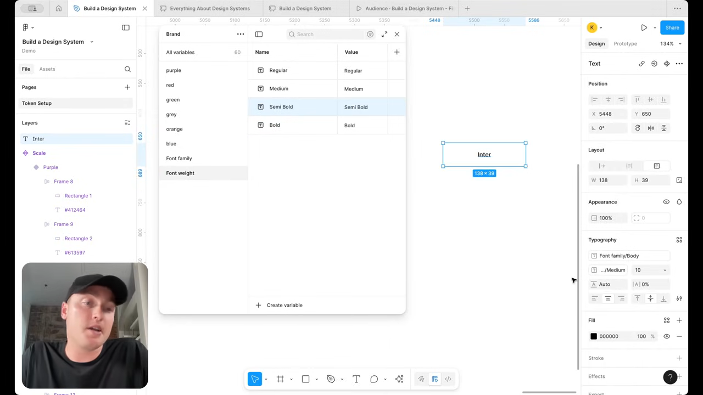
숫자 스케일은 하나만
마지막으로 'Scale'이라는 숫자 변수 하나를 만들어요. 너비, 반경, 패딩, 간격처럼 숫자가 들어가는 곳은 모두 여기서 가져와요. 색처럼 100 단위 이름을 쓰는데, 이번엔 100마다 4px씩 늘어요. 아래 화면처럼 100 = 4, 200 = 8 … 800 = 32예요.
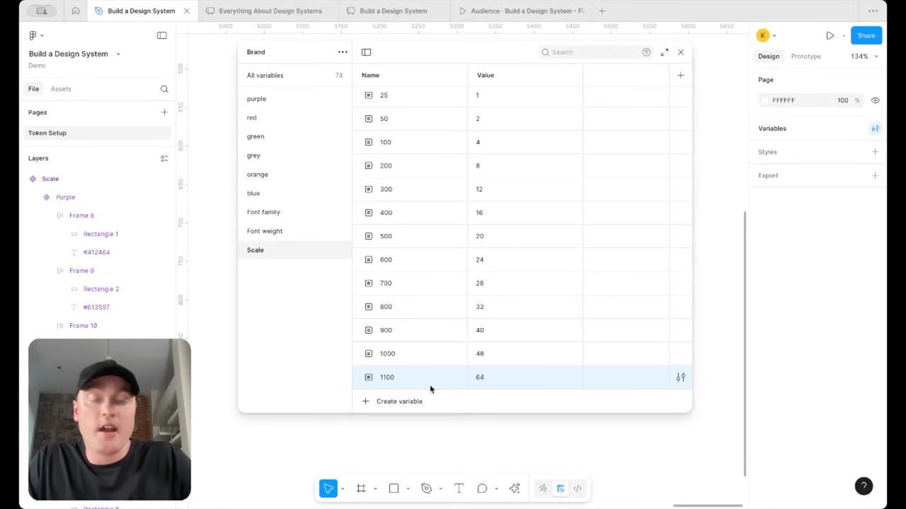
1px 테두리나 2px 포커스 테두리처럼 작은 값은 25 = 1, 50 = 2로 추가해요. 큰 쪽은 256px까지 4px씩 모두 만들면 64칸이 필요하니, 900 = 40, 1000 = 48, 1100 = 64처럼 건너뛰어요. 발표자는 여기에 3 같은 홀수를 섞는 건 '이상하다'며 권하지 않아요.
발표자는 숫자가 들어가는 모든 곳을 이 스케일 하나로 묶는 건 고급 시스템만 끝까지 지키는 일이라서, 이 영상에서는 거기까지 하지 않는다고 해요.
Alias 컬렉션: 날값에 역할을 붙여요
Alias 컬렉션은 Brand의 스케일을 범주로 나누는 곳이에요. 아래 슬라이드처럼 같은 Red 스케일이 Error 스케일이 되기도 하고 Primary 스케일이 되기도 해요. 아직 컴포넌트에 칠하는 단계는 아니지만, 테마의 모양이 여기서 잡혀요.
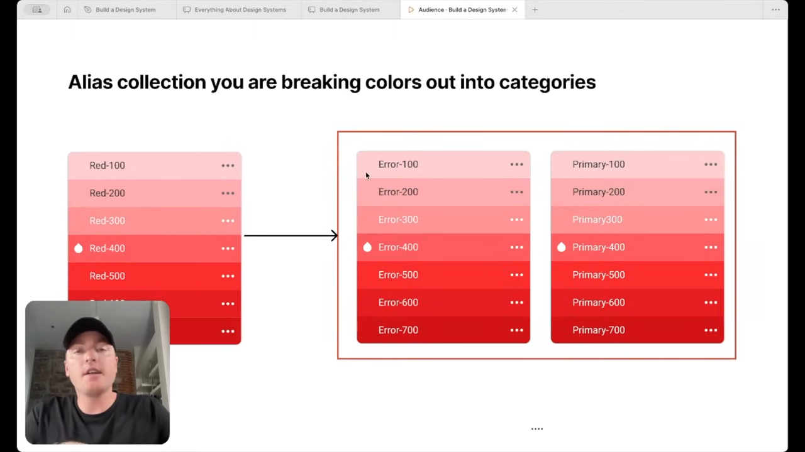
왜 이렇게 나눌까요? 일관성 때문이에요. 다음 슬라이드의 에러 알림은 빨간색이지만, Primary가 아니라 Error 스케일에서 색을 가져와야 해요. 브랜드 색도 빨강인 회사에서 빨간 걸 전부 Primary에서 가져오면, 개발자는 어떤 빨강이 에러 상태인지 구분하지 못해요.
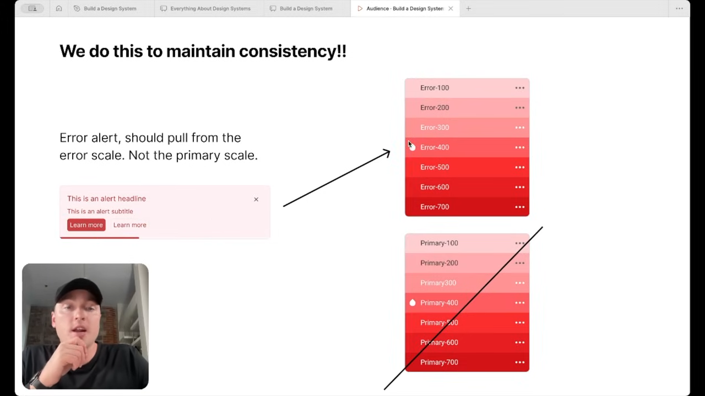
역할을 붙이는 작업
새 컬렉션 'Alias'를 만들고, Brand 스케일을 하나씩 역할 그룹으로 이어요. 값 칸에 직접 헥스를 쓰지 않고 '별칭 만들기'로 Brand 변수를 가리키게 해요. 아래 화면에서 Primary 그룹의 50~800이 purple/50~purple/800을 가리키고 있어요.
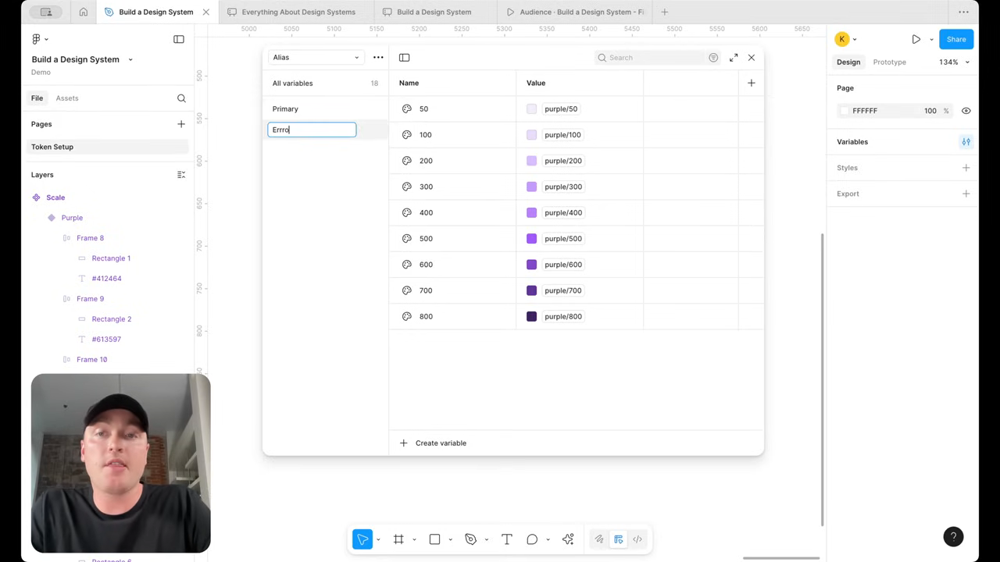
짝은 이렇게 맞춰요.
| Brand 스케일 | Alias 역할 | 쓰임 |
|---|---|---|
| purple | Primary | UI Collective의 기본 브랜드 색 |
| red | Error | 폼 에러, 위험 알림 |
| green | Success | 성공 상태 |
| grey | Neutral | 글자, 아이콘, 제목처럼 쓰임이 여러 가지라서 '중립'이라는 이름을 붙여요 |
| orange | Warning | 경고 |
| blue | Information | 정보 안내 |
숫자도 Alias에서 역할을 받아요. 테두리 두께와 모서리 반경은 값이 몇 개 안 돼서 100 단위 대신 none·sm·md·lg로 불러요. 테두리 두께는 sm = 1px(Scale/25), md = 2px, lg = 4px(Scale/100)이에요. 반경은 1px짜리가 거의 쓰이지 않아서 아래처럼 none = 0, sm = 2, md = 4, lg = 8로 시작해요.
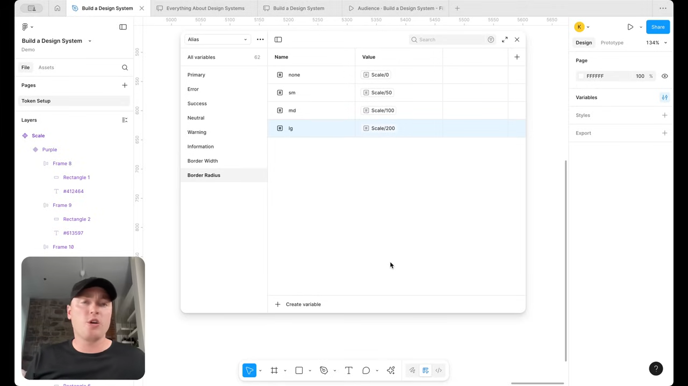
멀티 브랜드: branded house와 house of brands
Alias는 여러 브랜드를 담는 곳이기도 해요. 발표자가 가장 자주 받는 질문이라며 두 갈래를 나눠 설명해요. 첫째는 branded house예요. 아래 사진의 코카콜라, 코크 제로, 다이어트 코크처럼 기본 색만 조금 다르고 글꼴, 테두리, 반경, 성공 색 같은 나머지는 모두 같아요.
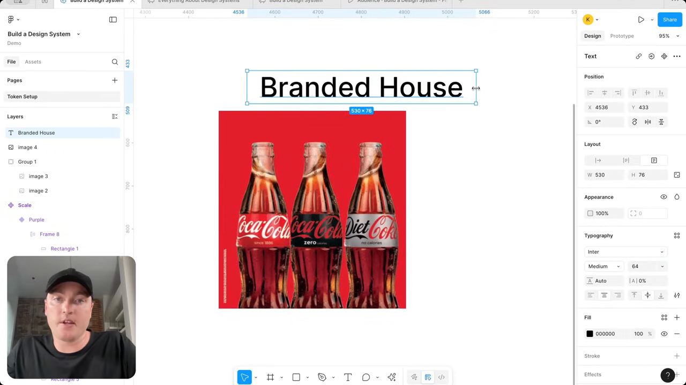
둘째는 house of brands예요. 같은 코카콜라 회사라도 스프라이트, 비타민 워터, 몬스터, 파워에이드, 다사니, 닥터페퍼는 기본 색, 보조 색, 글자, 반경, 컴포넌트까지 모두 달라요. 이 경우 발표자는 브랜드마다 디자인 시스템을 따로 두라고 권해요. 브랜드가 두 개뿐이라면 Brand 컬렉션 이름을 'Brand Coke'로 바꾸고 통째로 복제해 'Brand Sprite'를 만드는 방법도 있다고 해요.
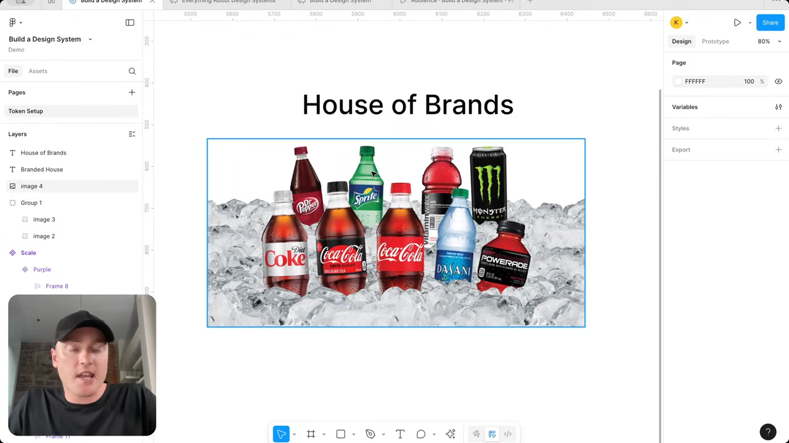
더 흔한 쪽은 branded house예요. 방법은 간단해요. Alias 컬렉션에 모드를 하나 더 만들어 Brand 1, Brand 2로 부르고, Brand 2의 Primary만 다른 스케일로 바꿔요. 아래 화면은 Brand 2 칸을 red로 하나씩 바꾸는 중이에요. 600까지는 red로 바뀌었고, 700과 800은 아직 purple이에요. 영상에서 이 대목을 설명하며 한 번 'house of brands'라고 말하지만, 내용은 branded house 이야기예요.
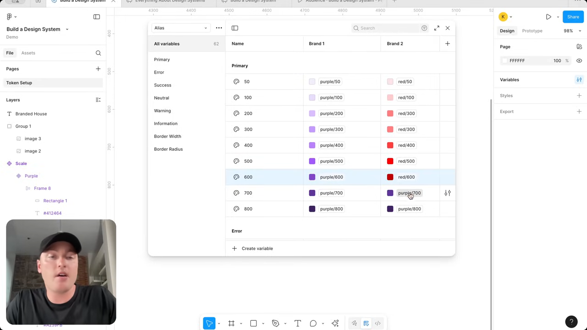
흰색과 검은색은 바뀔 일이 없어서 따로 챙겨요. 발표자는 Brand에 'foundation' 그룹을 만들어 white·black을 두고, Alias의 Neutral 그룹 안에 white·black을 추가해 이어 줘요. 별도 그룹으로 빼도 되지만 Neutral에 넣는 편이 찾기 쉽대요.
Mapped 컬렉션과 다크 모드
Mapped 컬렉션은 나무의 잎이에요. 아래 그림처럼 뿌리(Brand)에는 25, #797929, Inter 같은 날값이, 줄기(Alias)에는 primary, error, success 같은 역할이 있고, 잎(Mapped)에는 text, icon, surface, border가 붙어요. 컴포넌트에 실제로 칠하는 건 이 잎이에요.
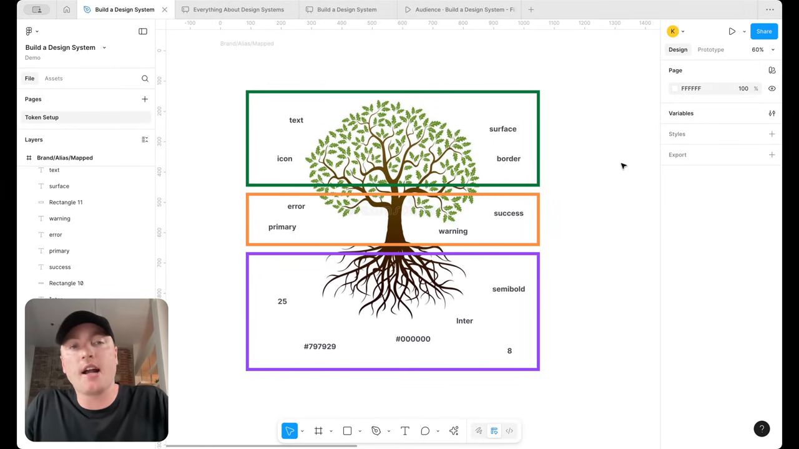
두 가지를 미리 짚고 가요. Alias의 색을 Mapped에 전부 옮길 필요는 없어요. 컴포넌트에 쓸 색만 골라, 한 스케일에서 두 개만 가져와도 돼요. 그리고 여기서 쓰는 이름 짓기는 시작용으로 단순하게 만든 거예요. 발표자는 'on-color, on-color-subtle' 같은 더 복잡한 체계를 다른 강좌에서 다룬다고 해요.
작업 중에 하나 더 정해요. 각 스케일의 기준색(500)을 Alias와 Brand에서 'default'로 이름 바꿔요. 어떤 색에서 스케일을 뽑았는지 이름만 보고 알 수 있어요.
text와 icon
아래 화면이 완성한 text 묶음이에요. 제목은 headings(Neutral/800), 본문은 body(Neutral/700)예요. action은 본문 속 링크 색(Primary/default), action-hover는 링크에 마우스를 올렸을 때 색(Primary/600)이에요. 상태색 네 개는 각 스케일의 default를 쓰고, on-action은 색 배경 위에 올리는 글자예요. 화면은 on-action에 Neutral/white를 고르기 직전이에요.
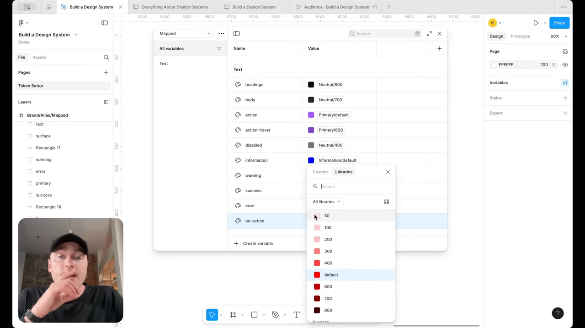
발표자는 action에 실수로 Brand의 purple을 골랐다가 Primary/default로 고쳐요. '컬렉션을 한 단계씩 거치고, 건너뛰지 말라'는 게 여기서 나온 말이에요.
icon 묶음은 text 묶음을 그대로 복제해서 만들어요. 경고 글자 옆의 경고 아이콘은 같은 색이어야 하니까요. 아이콘에는 제목·본문 구분이 필요 없어서 headings·body를 지우고 default(Neutral/700) 하나를 둬요.
surface와 border
surface는 면의 색이에요. page는 페이지 배경, default는 대시보드 위 카드처럼 페이지에 얹는 면이에요. 흰색이어도 되고 아주 옅은 회색이어도 돼요. action과 action-hover는 버튼 배경이에요. 알림 배경으로 쓸 상태색은 옅은 50을 골라요.
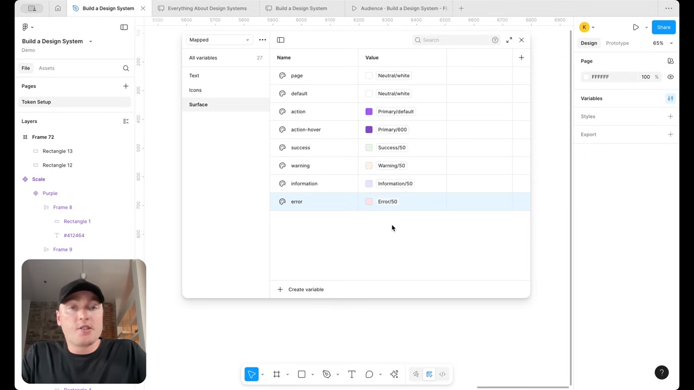
border는 면보다 조금 진한 200을 상태색에 쓰고, default는 카드나 입력란에 두르는 아주 옅은 Neutral/50이에요. focus는 포커스 링 색인데 action과 같은 Primary/default로 둬요. 작업하다 surface에 disabled를 빠뜨린 걸 알아채고 Neutral/100으로 추가해요.
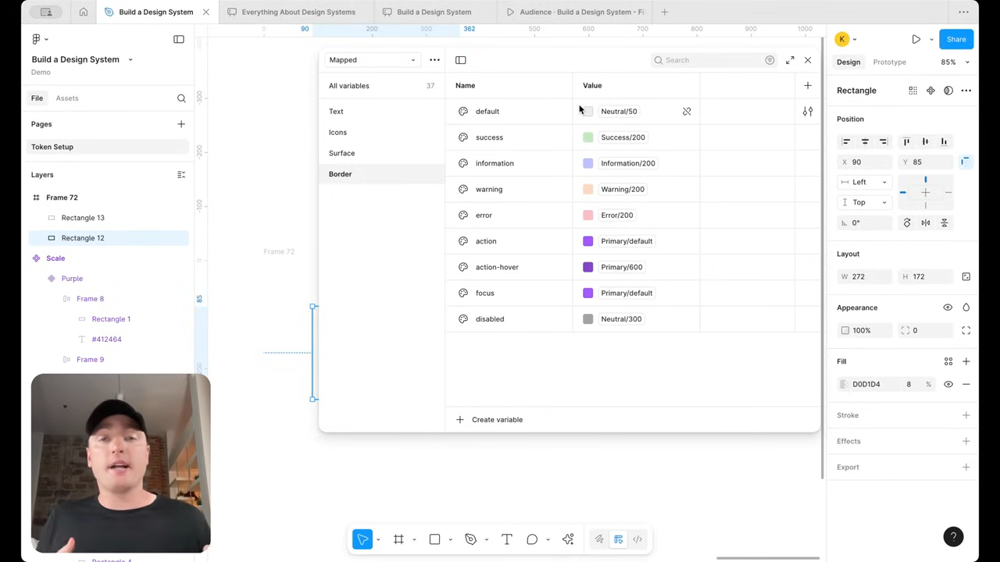
다크 모드는 뒤집기예요
발표자는 '다크 모드가 어렵다'는 말에 고개를 저어요. Mapped 컬렉션에 모드를 하나 더 만들어 Light·Dark로 부르고, 밝기를 뒤집기만 하면 된대요. 다만 브랜드 기본색처럼 다크 모드에서도 바뀌면 안 되는 색이 있어요. 그런 색은 Alias에서 이름 끝에 '-fixed'를 붙여 표시해요. 아래 화면에서 Primary 그룹의 default를 default-fixed로 바꿨어요. Brand 1은 purple/default, Brand 2는 red/500을 가리켜요.
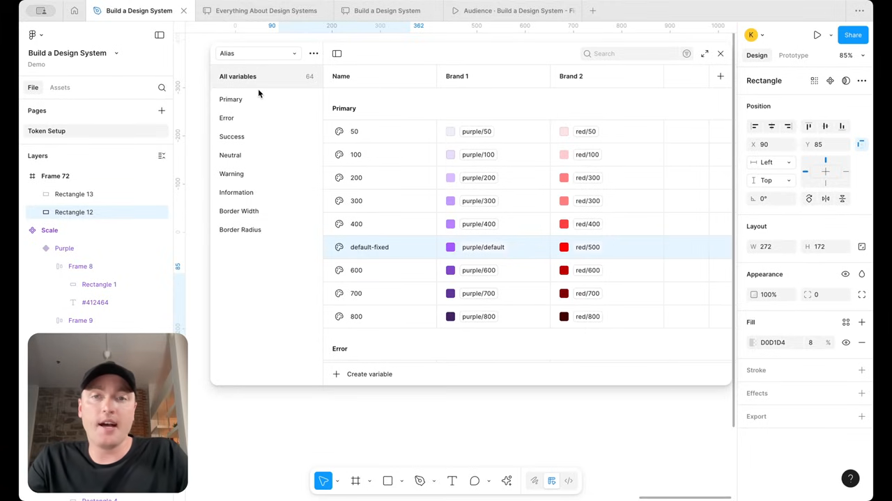
아래가 뒤집은 결과예요. Light 열의 headings가 Neutral/800이면 Dark 열은 Neutral/50이에요. action은 양쪽 모두 Primary/default-fixed를 써서 같은 보라를 유지하고, on-action은 white에서 black으로 바뀌어요.
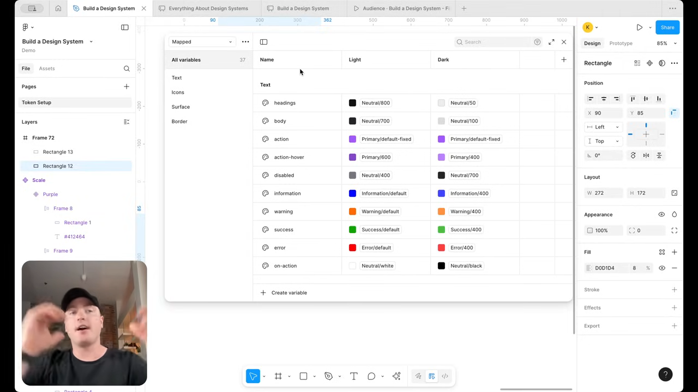
| text 토큰 | Light | Dark |
|---|---|---|
| headings | Neutral/800 | Neutral/50 |
| body | Neutral/700 | Neutral/100 |
| action | Primary/default-fixed | Primary/default-fixed |
| action-hover | Primary/600 | Primary/400 |
| disabled | Neutral/400 | Neutral/700 |
| information·warning·success·error | 각 default | 각 400 |
| on-action | Neutral/white | Neutral/black |
발표자는 다크 모드 값을 처음엔 '대충 빨리' 정한다고 털어놔요. 어차피 컴포넌트를 만든 뒤 접근성 테스트를 하며 다시 맞추니까요. 그래서 이 표의 값은 출발점일 뿐이에요.
Responsive 컬렉션과 텍스트 스타일
색은 Light·Dark로 바뀌지만, 글자 크기나 간격은 기기 크기에 따라 바뀌어요. 그런 값을 모아 두는 곳이 Responsive 컬렉션이에요. 글자 크기, 행간, 문단 간격, 그리고 간격·패딩·갭 같은 값이 여기에 들어가요.
타입 스케일 뽑기
발표자는 typescale.com으로 타입 스케일을 만들어요. 아래 화면 왼쪽 패널에서 기본 글자 크기를 16, 비율을 1.250(Major Third), 단위를 px로 맞췄어요. 피그마는 rem이 아니라 px로 일하기 때문이에요. 가운데 목록에 h1 61.04px부터 small 12.8px까지 크기가 나와요.
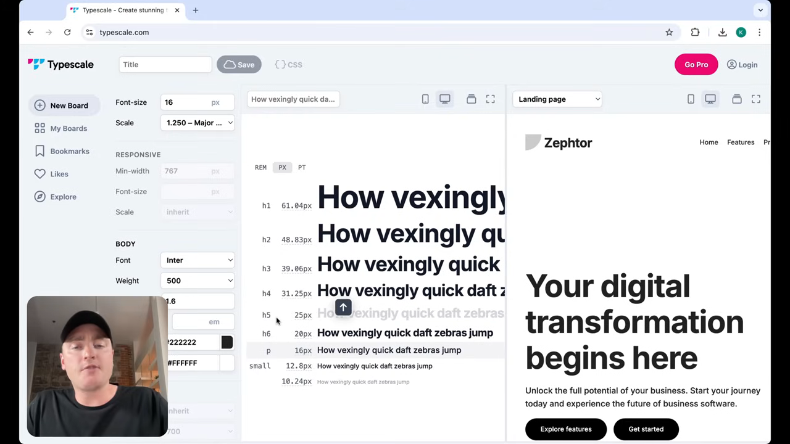
본문 기본 크기를 16으로 두는 이유는 접근성이에요. 16 이상이면 아주 가는 폰트가 아닌 한 걱정할 필요가 없고, 16보다 작으면 폰트에 따라 조심해야 한대요. 피그마에 소수점 크기를 둘 수는 없으니 숫자 스케일과 같은 규칙을 써요. 가장 가까운 4의 배수로 반올림해서 25는 24, 31.25는 32, 61.04는 60이 돼요. 모바일은 사이트에서 비율을 낮춘 스케일을 하나 더 뽑아 같은 방식으로 반올림해요. 모바일 h1 47.78은 48이 돼요.
Responsive 컬렉션 채우기
h1부터 h6, 그리고 paragraph lg·md·sm·xsm 그룹을 만들고, 그룹마다 font size, line height, paragraph spacing 세 개의 숫자 변수를 둬요. 발표자는 처음에 문자열 변수로 만들었다가 숫자 변수로 다시 만든 적이 있다며 처음부터 숫자로 하라고 해요. 모드는 Desktop과 Mobile 두 개이고, 기기 너비를 담는 device size 변수(1440, 440)도 하나 둬요.
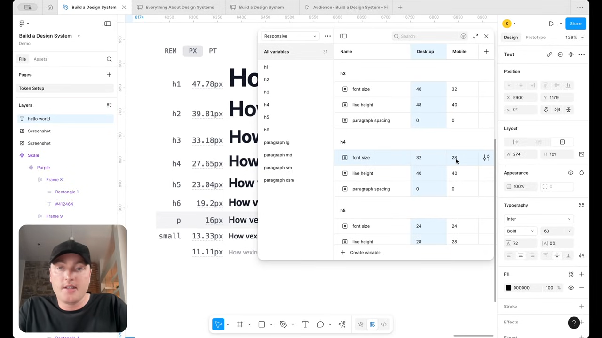
행간은 글자 크기에 배수를 곱해 원하는 느낌이 날 때까지 맞춰요. 0.8처럼 빽빽하게 갈 수도 있지만, 이 영상은 단순하게 1.2로 통일하고 결과를 다시 4의 배수로 반올림해요. 48 × 1.2 = 57.6은 56, 32 × 1.2 = 38.4는 40이 되는 식이에요. 영상에서 정한 값을 모으면 이래요.
| 스타일 | Desktop 크기 / 행간 | Mobile 크기 / 행간 |
|---|---|---|
| h1 | 60 / 72 | 48 / 56 |
| h2 | 48 / 56 | 40 / 48 |
| h3 | 40 / 48 | 32 / 40 |
| h4 | 32 / 40 | 28 / 32 |
| h5 | 24 / 28 | 24 / 28 |
| h6 | 20 / 24 | 20 / 24 |
| paragraph lg | 20 / 24 | 같음 |
| paragraph md | 16 / 20 | 같음 |
| paragraph sm | 14 / 16 | 같음 |
| paragraph xsm | 12 | 같음 |
표에서 눈여겨볼 점이 세 가지 있어요. 첫째, 본문 크기는 모바일에서도 바꾸지 않는 게 원칙이에요. 둘째, paragraph sm 14는 4px 규칙을 일부러 깬 값이에요. 셋째, xsm 12는 접근성상 권하지 않지만 캡션이나 약관처럼 꼭 필요한 곳에 쓰려고 남겨 둬요. h6와 paragraph lg가 둘 다 20인데, 제목은 더 굵게 써서 구분해요. 문단 간격은 정해진 규칙이 없어서 보기 좋은 값(제목 64·48·32, 본문 20)을 넣어요.
발표자는 여기서 크기에 따라 다른 변수로 넘어가는 'jumper 변수'도 다루려다가, 컴포넌트를 만들 때 보는 게 낫겠다며 미뤄요. 영상의 남은 부분에서는 이 이야기로 돌아오지 않아요.
텍스트 스타일 만들기
변수가 준비되면 텍스트 스타일을 만들어요. 글자 하나에 headings 글꼴, Semi Bold 굵기, h1 font size·line height 변수를 입히고 스타일로 저장해요. 그다음 떼어 내기(detach) → 다음 크기 변수 입히기 → 스타일 만들기를 h6까지 반복해요. 본문은 크기마다 세 가지예요. 기본(Regular), semibold, 밑줄을 친 link예요.
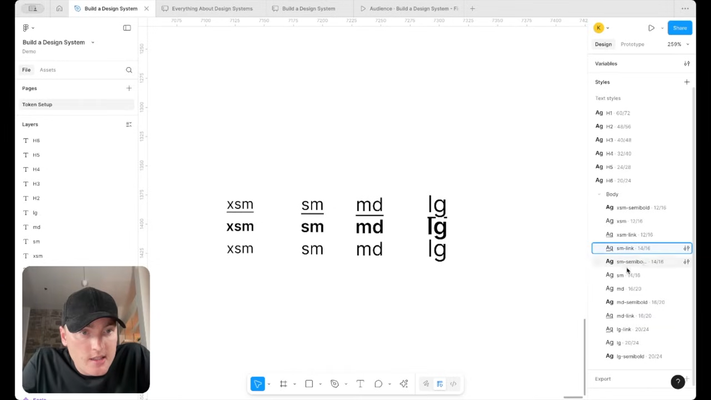
아이콘은 Material 3 아이콘 라이브러리를 디자인 시스템 파일에 로컬 컴포넌트로 넣어 써요. 다른 아이콘 세트를 써도 괜찮대요.
변수 스코핑으로 목록 줄이기
컴포넌트를 만들기 전에 마지막 정리를 해요. 변수를 칠할 때 목록에 모든 변수가 다 뜨면 고르기 힘들어요. 그래서 컴포넌트에 직접 쓰면 안 되는 변수를 숨겨요. 변수마다 어디에 쓸 수 있는지 범위를 정하는 이 작업이 스코핑이에요. 아래 화면은 Brand 컬렉션 변수의 Scope 설정 창이에요. 여기서 'Show in all supported properties'를 끄면 그 변수는 선택 목록에 나오지 않아요.
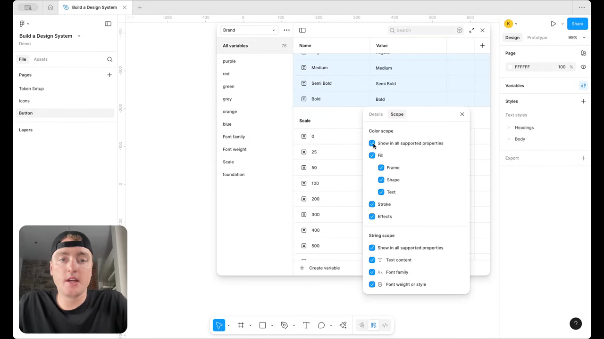
Brand의 색과 Alias의 Primary 같은 원재료는 숨기고, Scale은 패딩이나 간격에 쓸 수 있게 남겨 둬요. Alias의 border width는 stroke에만, border radius는 모서리 반경에만 보이게 해요. 그러면 반경을 고를 때 목록을 스크롤할 필요 없이 반경 변수만 바로 떠요.
버튼·라벨·필드·인풋
여기서부터는 토큰만으로 컴포넌트를 만들어요. 버튼에서 정한 순서가 이후 모든 컴포넌트에 그대로 반복되니, 버튼을 천천히 보면 나머지는 빠르게 따라갈 수 있어요.
- 오토 레이아웃으로 묶어요 — 'Join UI Collective' 글자(body medium, 16px)와 info 아이콘을 Shift+A로 묶어요. 아이콘은 기본 24×24에서 20×20으로 줄이고, 패딩 가로 12·세로 8, 간격 8, 반경 2를 줘요.
- 토큰을 칠해요 — 배경 surface/action, 글자 text/on-action, 아이콘 icon/on-action, 테두리 border/action이에요.
- 속성을 달아요 — 왼쪽·오른쪽 아이콘을 켜고 끄는 레이어 속성, 아이콘을 바꾸는 인스턴스 스왑, 라벨 텍스트 속성이에요.
- 베리언트를 만들어요 — Status(default·hover·focus·disabled)와 Type(default·outline·transparent)이에요.
두 가지 습관이 눈에 띄어요. 하나는 테두리예요. 테두리 색이 배경과 같아도 꼭 넣어 둬요. 나중에 테두리가 필요해지면 모든 컴포넌트를 다시 열어 추가해야 하거든요. 다른 하나는 속성 이름이에요. 피그마는 같은 이름의 속성을 두 개 둘 수 없어서, 'icon left' 레이어 속성과 짝이 되는 인스턴스 스왑 이름 앞에 '↓' 기호를 붙여요. 한쪽이 다른 쪽에 딸린 속성이라는 표시도 돼요.
포커스 링
포커스는 키보드 탭으로 화면을 이동하는 사용자에게 지금 어디가 선택됐는지 보여 주는 표시예요. 코드에서 처리하는 부분이지만, 발표자는 개발자가 볼 수 있게 피그마에도 그려 둬요. 아래 화면처럼 border/focus 색의 2px 사각형을 버튼 바깥쪽 2px 떨어진 자리에 둬요.
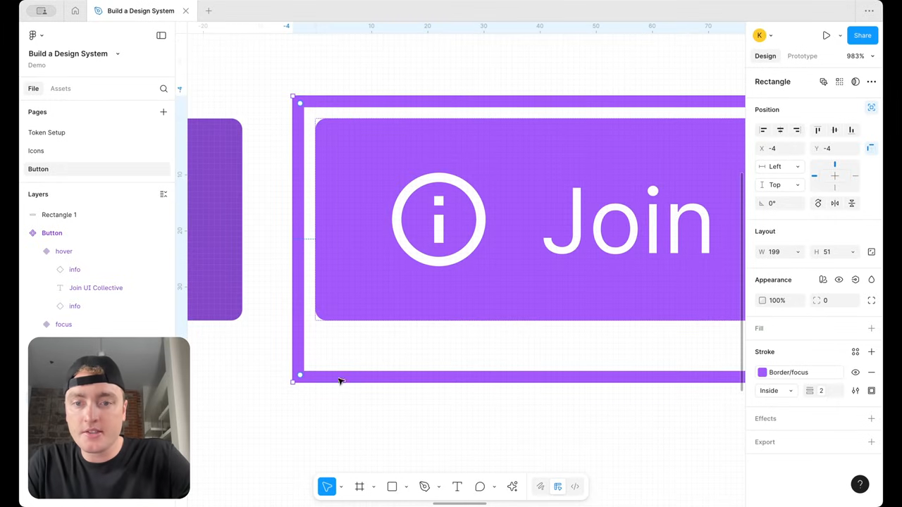
이 사각형은 오토 레이아웃의 흐름에서 빼야 해요. 발표자는 '절대 위치' 도구로 빼고, 제약을 좌우·상하로 걸어요. 그래야 라벨을 'Learn more'나 'Hello'로 바꿔 버튼 폭이 달라져도 링이 따라 늘고 줄어요.
disabled는 surface·border·text·icon을 모두 disabled 토큰으로 바꿔요. 처음 모양이 거슬리자 발표자는 surface/disabled와 border/disabled 값을 더 옅게 고쳐요. 토큰으로 칠해 뒀으니 값만 바꾸면 버튼이 따라 바뀌어요.
Type 베리언트는 세 가지예요. outline은 배경을 surface/default(흰색)로 두고 테두리를 남겨요. 글자와 아이콘은 on-action 대신 text/action, icon/action을 써요. transparent는 배경과 테두리를 모두 빼요. 아래 화면이 완성본이에요. 줄은 Type(default, outline, transparent), 칸은 Status(default, hover, focus, disabled)예요.
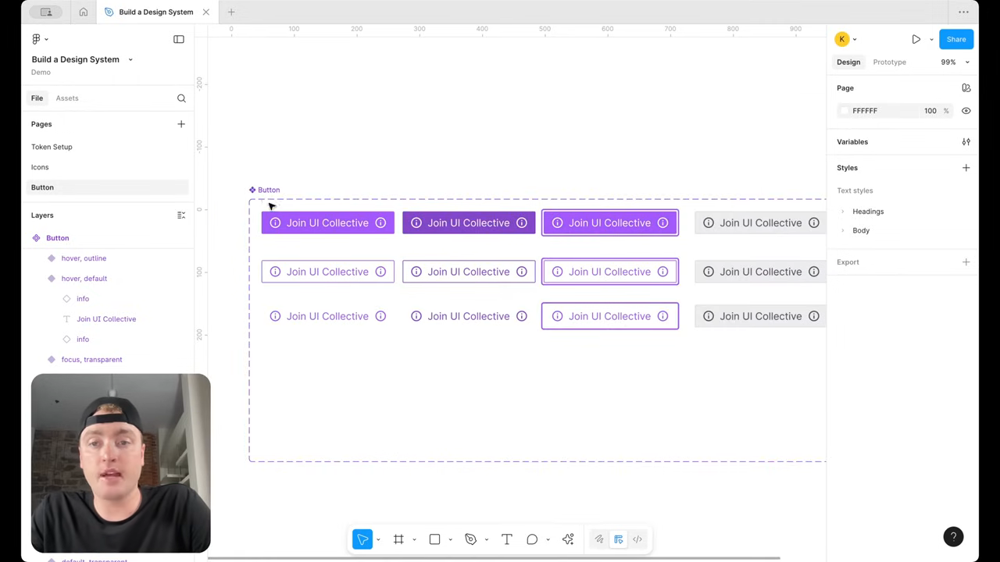
라벨: 따로 빼 두면 어디서나 써요
라벨은 필드 위에 붙는 '이름'이에요. 발표자는 라벨을 인풋 안에 넣지 않고 따로 컴포넌트로 만들어요. 그래야 라벨 베리언트만 바꿔 끼워서 인풋 베리언트가 불어나는 걸 막을 수 있어요. 텍스트는 body medium에 text/body, 옆의 도움말 아이콘은 icon/action이에요. Type은 default와 required 두 가지예요.
required의 별표(*)는 icon/error 색이에요. 아래 화면 왼쪽처럼 별표를 라벨 프레임 안에 넣으면, 별표가 있는 라벨만 오른쪽으로 밀려 줄이 안 맞아요. 그래서 오른쪽처럼 별표를 절대 위치로 라벨 왼쪽 바깥에 둬요. 별표가 있든 없든 'Label' 글자가 같은 세로선에 서요.
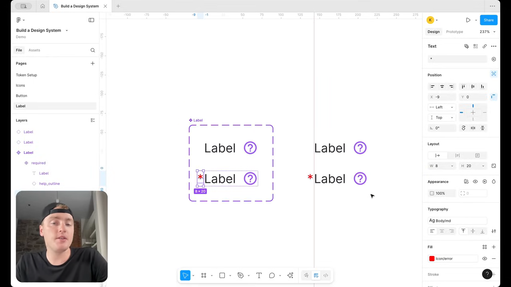
'별표를 뒤에 붙이면 안 되냐'는 질문에 발표자는 접근성 관점에서 사용자가 '필수'라는 걸 먼저 보고 필드 이름을 봐야 한다고 답해요.
필드
필드는 사용자가 실제로 입력하는 칸이에요. 플레이스홀더 글자와 아이콘 두 개를 오토 레이아웃으로 묶고, 글자를 fill로 늘려요. 그래야 플레이스홀더가 'Name'이든 'Email'이든 오른쪽 아이콘이 늘 끝에 붙어요. 패딩 12·8, 테두리 border/default 1px, 배경 surface/default, 반경 2예요.
베리언트는 버튼과 같은 Status 네 가지예요. hover에는 테두리를 border/action-hover로 바꾸고, 배경에 새 토큰 surface/action-hover-light(Primary/50, 다크 모드는 진한 쪽)를 만들어 써요. 아래 화면이 위에서부터 default, hover, focus, disabled예요.
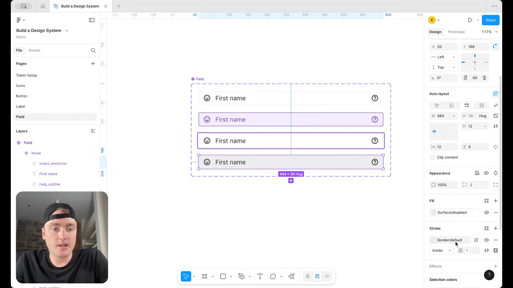
발표자는 'filled·not filled' 상태도 잠깐 언급해요. 아직 입력하지 않은 칸은 text/placeholder 같은 더 옅은 글자색을 쓰는 식이에요. 고급 주제라며 개념만 짚고 넘어가요.
인풋: 라벨 + 필드 + 힌트
인풋은 새로 그리지 않아요. 라벨 인스턴스와 필드 인스턴스를 세로로 쌓고, 아래에 힌트 텍스트를 붙인 뒤 오토 레이아웃(간격 8)으로 묶어요. 이대로 컴포넌트로 만들면 안쪽 라벨과 필드의 속성이 바깥에서 안 보여요. 그래서 '중첩 인스턴스' 속성을 켜서 라벨과 필드의 속성을 노출해요.
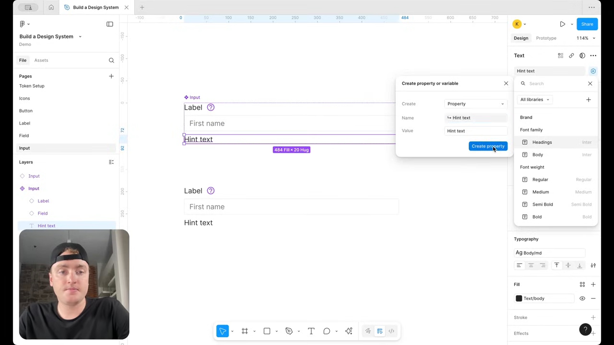
이렇게 이미 만든 컴포넌트를 조합해 더 큰 컴포넌트를 만드는 방식을 발표자는 '아토믹 디자인'이라고 소개해요. 디자인 시스템 전문가 Brad Frost가 만든 개념이에요. 라벨을 따로 빼 둔 덕에, 인풋은 default·required를 위한 베리언트를 따로 만들 필요가 없어요.
마지막으로 베리언트를 하나 더 보여 줘요. Type을 default와 email로 나누고, email에서는 오른쪽 도움말 아이콘을 숨기고 왼쪽에 메일 아이콘을 켜요. 이런 식으로 자주 쓰는 입력 형태를 베리언트로 미리 만들어 둘 수 있어요.
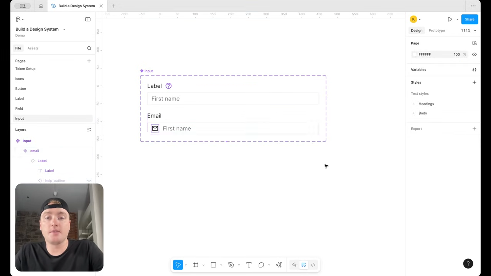
메뉴와 선택 컨트롤
이 구간의 컴포넌트는 모두 같은 패턴이에요. 작은 '아이템'을 만들고, Status 베리언트(default·hover·focus·disabled)와 선택 여부 베리언트를 단 뒤, 라벨이나 다른 아이템과 묶은 래퍼 컴포넌트를 만들어요. 래퍼에서는 늘 중첩 인스턴스 속성을 켜서 안쪽 속성을 노출해요.
메뉴
메뉴 아이템은 아이콘 두 개와 글자를 묶고, 오른쪽 아이콘이 끝에 붙게 글자를 fill로 둬요. 테두리는 아래쪽에만 1px border/default를 줘요. 아이템을 위아래로 쌓았을 때 선이 겹치지 않게 하려는 거예요. 이름은 '.menu item'처럼 마침표로 시작해요. 라이브러리를 발행할 때 이 부품은 올리지 말라는 표시예요.
베리언트는 Status(default·hover·disabled)에 Type(unselected·selected)을 곱해요. 메뉴에는 보통 선택된 항목이 하나 있으니까요. 아래 화면에서 왼쪽 열이 unselected, 오른쪽 열이 selected예요. selected는 배경 surface/action, 글자 text/on-action을 써요.
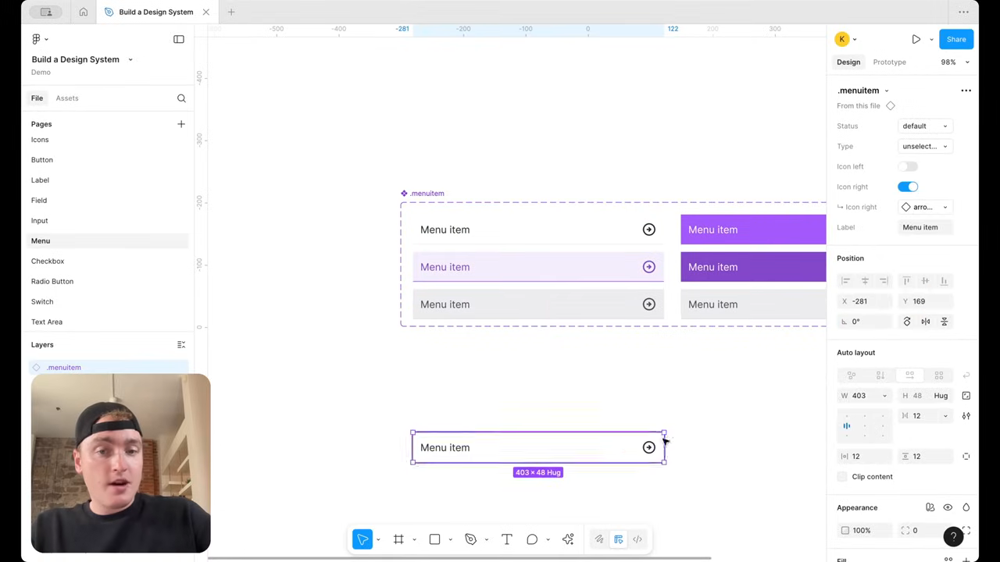
메뉴는 아이템 여덟 개를 프레임 하나에 담고, 옆에 둥근 스크롤바 프레임을 붙여 가로로 묶어요. 스크롤바는 레이어 속성으로 켜고 끌 수 있게 해요. 영상에서는 아이템을 복사하면 아래쪽에만 있던 테두리가 네 면에 생기는 피그마 버그가 계속 나와서, 발표자가 그때마다 손으로 다시 맞춰요.
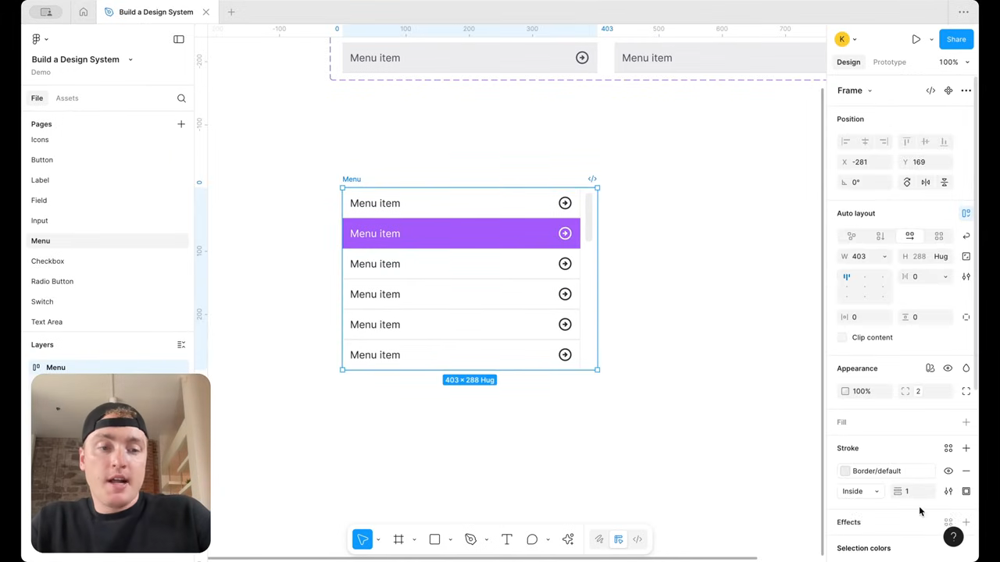
체크박스
체크 아이콘(20×20)을 패딩 8로 감싸 36×36을 만들어요. 배경 surface/action, 테두리 border/action 1px을 바깥쪽에 두고, 반경 4예요. 발표자는 체크박스가 조금 크게 보이는 쪽을 좋아해서 테두리를 바깥에 둔다고 해요.
Status는 default·hover·focus·disabled이고, 원하면 error도 둘 수 있어요. Type은 selected·unselected예요. unselected는 체크 아이콘을 지우고 배경을 surface/default로 바꿔요. hover에는 surface/action-hover-light를 써요. 아래 화면 위 줄이 selected, 아래 줄이 unselected이고, 맨 오른쪽 분홍 칸이 error예요.
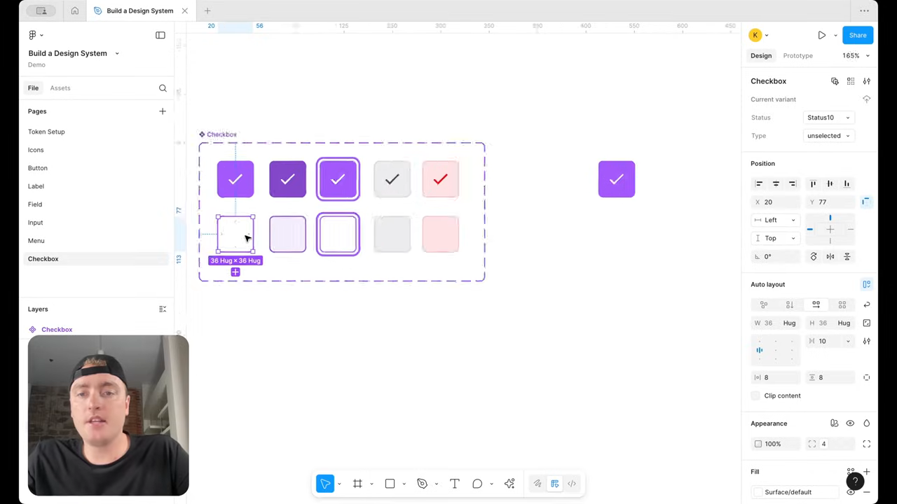
그다음 체크박스와 'Checkbox Label' 글자를 간격 12로 묶어 래퍼를 만들어요. 라벨을 숨기는 레이어 속성과 문구 텍스트 속성을 달고, 중첩 인스턴스로 체크박스 속성을 노출해요. 원하면 '마우스를 올리는 동안 hover로, 클릭하면 selected로' 같은 프로토타입 연결도 미리 걸어 둘 수 있어요.
라디오 버튼
8×8 원 위에 오토 레이아웃 프레임(패딩 8)을 씌워 surface/action을 칠해요. 이대로는 네모라서 반경을 둥글게 해야 하는데, Alias의 반경 목록에 그런 값이 없어요. 그래서 반경에 'round'를 추가하고 숫자 스케일의 가장 큰 값을 가리키게 해요. 이 round는 이후 스위치, 아바타, 배지에서도 계속 써요.
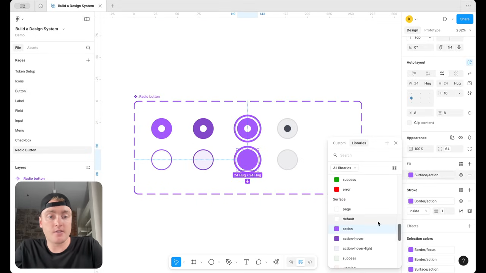
포커스 링은 원 모양이라 2px을 정확히 맞추기 어렵지만, 늘 원이라도 제약은 좌우·상하로 걸어 두라고 해요. disabled의 안쪽 점은 surface/disabled가 너무 옅어서 icon/disabled로 칠해요.
스위치
스위치는 손잡이 원(knob)이 크기를 좌우해요. 손잡이를 오토 레이아웃 프레임에 넣고 패딩을 세로 4, 가로 4~8로 이리저리 맞춰 보며 비율을 정해요. 정답이 있는 게 아니라 UI에 넣어 보고 느낌으로 고르라고 해요. 켜진 상태는 손잡이를 오른쪽에 붙이고 배경 surface/action, 손잡이 surface/default예요.
Type의 unselected는 오토 레이아웃 정렬을 왼쪽으로 바꿔 손잡이를 옮기고, 배경과 테두리를 default로 바꿔요. 손잡이 색은 몇 가지를 시험해 보다 border/action 색을 골라요. 아래 화면 위 줄이 켜진 상태, 아래 줄이 꺼진 상태예요.
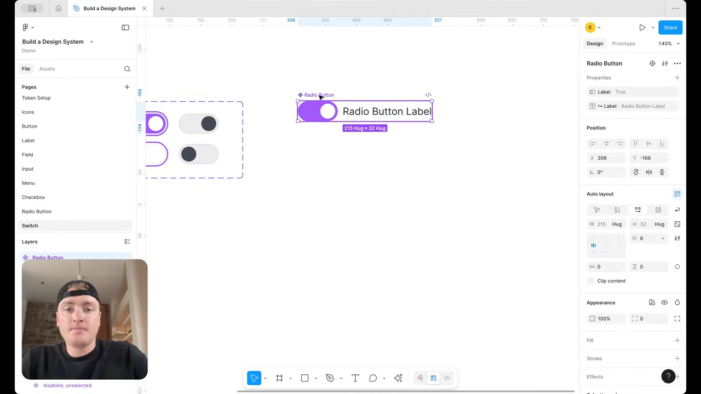
발표자는 여기서 이름 규칙 하나를 말해요. 베리언트 속성 이름은 대문자로 시작하고(Status, Type), 값은 소문자로 써요(default, hover). 래퍼를 만들고 나서 이름을 'Radio Button'으로 잘못 붙였다가 Switch로 고치는 장면도 있어요.
텍스트 영역
텍스트 영역은 필드를 복제해 떼어 낸 뒤 세로로 늘려 만들어요. 병력처럼 긴 글을 받는 칸이라 높이는 원하는 만큼 줘요. 여기서 발표자가 일부러 함정을 보여 줘요. 글이 여러 줄이 되면 왼쪽 아이콘이 첫 줄 옆에 혼자 떠서 어색한 빈칸이 생겨요. 그래서 왼쪽·오른쪽 아이콘 속성을 지우고 아이콘 하나만 남겨요.
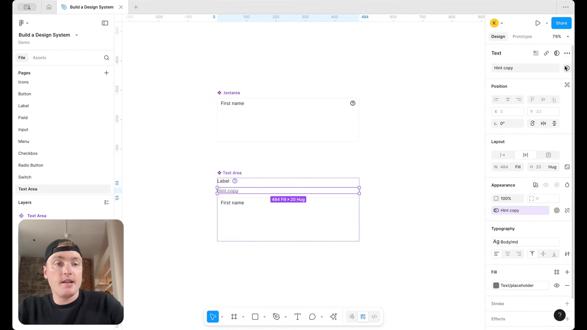
힌트 문구는 text/placeholder 색으로 넣고 켜고 끄는 속성과 문구 속성을 달아요. 원하면 아래에 글자 수 표시도 같은 방식으로 붙일 수 있대요.
내비게이션과 표시 컴포넌트
이 구간에서는 컴포넌트 열 개를 빠르게 만들어요. 틀은 같으니, 컴포넌트마다 새로 나온 요령만 짚어요. 전체 베리언트 구성은 이 섹션 끝의 표에 모았어요.
탭 바와 버튼 그룹
탭 아이템은 왼쪽 아이콘 하나와 글자만 둬요. 발표자는 탭에 오른쪽 아이콘을 두지 않는 편이래요. 포커스 링은 매번 다시 그리지 않고 버튼에서 복사해 붙인 뒤 2px 간격만 맞춰요. 선택된 탭은 아래쪽에 2px border/action 선을 그어 표시해요. 탭 바 전체에는 아래쪽 border/default 선을 깔아서, 선택된 탭의 보라 선이 회색 선 위에 얹힌 모양이 돼요.
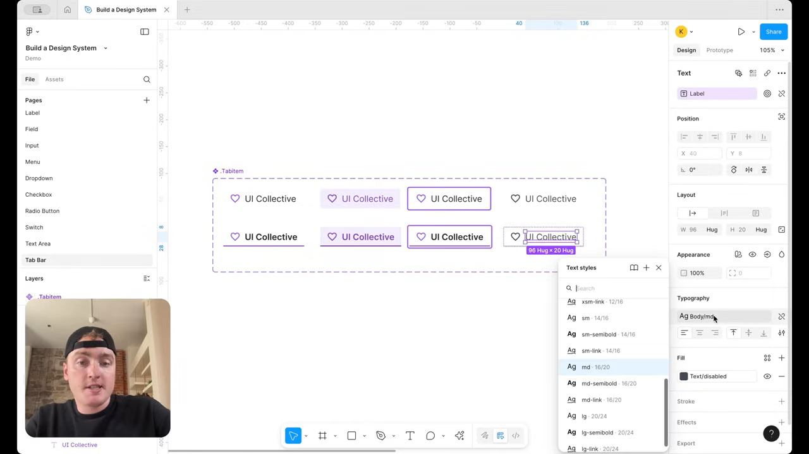
버튼 그룹은 오른쪽에만 테두리를 둔 아이템을 가로로 붙여 만들어요. 아이템 사이 간격은 0이고, 그룹 바깥에 테두리와 반경 4를 준 뒤 'clip content'를 켜서 모서리를 깎아요. 아이템의 상태는 default·hover·selected·disabled 네 가지로, Status와 Type을 하나로 합쳐 버렸다고 발표자도 인정해요.
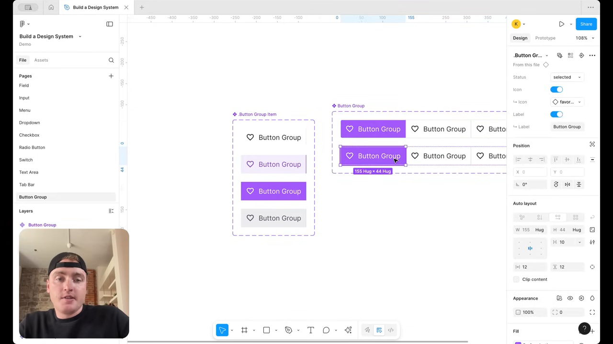
링크와 브레드크럼
링크는 홈 아이콘, 'Link' 글자, 새 창 아이콘으로 만들어요. 아이콘은 켜고 끌 수 있지만 라벨은 늘 있어야 해요. 아래 화면이 위에서부터 default, hover, focus, disabled예요. disabled는 원하면 surface/disabled 배경을 깔아 '누를 수 없다'는 걸 더 분명히 할 수 있대요.
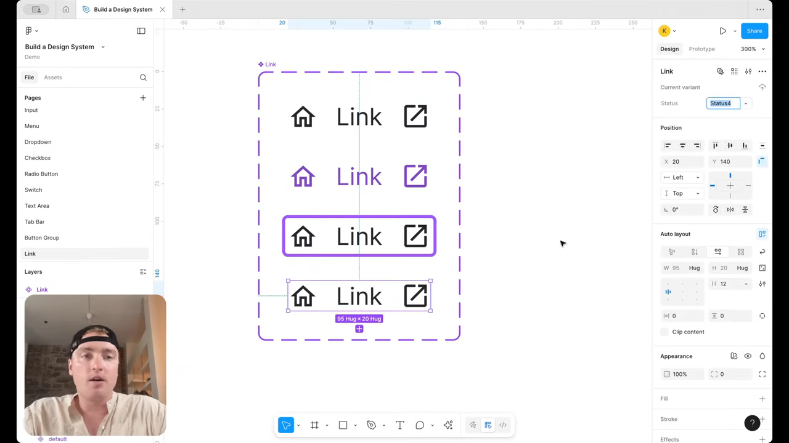
Type으로 basic과 inline을 나누는 방법도 보여 줘요. basic은 마우스를 올리면 밑줄이 생기고, inline은 반대로 평소에 밑줄이 있다가 올리면 사라져요.
브레드크럼은 링크 컴포넌트로 만들어요. 오른쪽 아이콘을 chevron right로 바꾸고 왼쪽 아이콘은 숨긴 채 여러 개 이어 붙여요. 첫 항목만 홈 아이콘을 켜요. 마지막 항목은 갈 곳이 없으니 화살표를 숨기고 inline 스타일로 '여기가 현재 위치'임을 보여 줘요. 항목은 6개 정도가 적당하다고 해요.
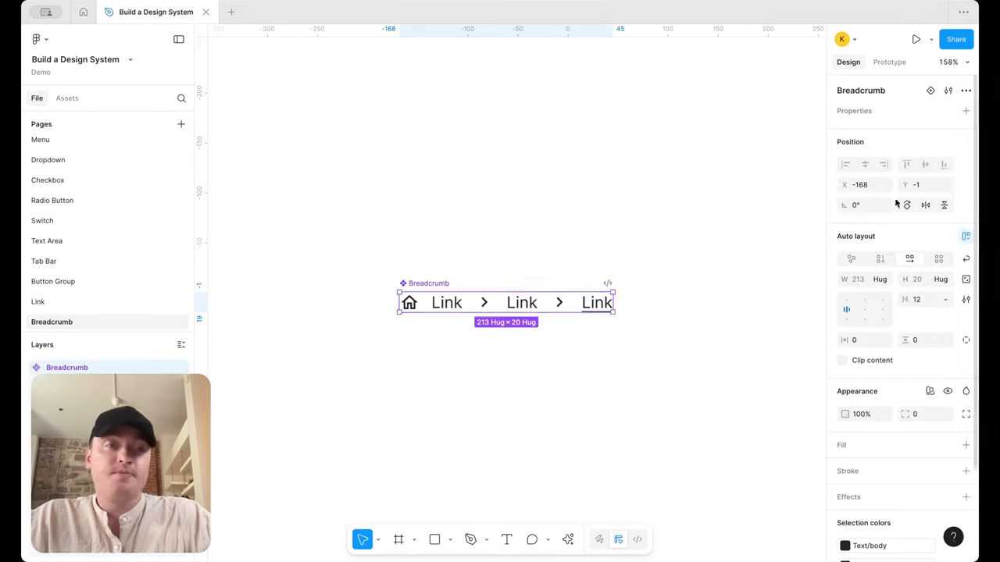
아바타
사람 아이콘을 64×64 원 프레임에 넣는데, 가운데 정렬로는 어색해서 아이콘을 절대 위치로 빼 크게 키운 뒤 'clip content'로 원 밖을 잘라요. 크기는 large 64, medium 48, small 32이고, 종류는 icon·image·initials 세 가지예요. initials는 'KM'처럼 이니셜을 넣고 크기에 따라 H5, H6, 본문 medium semibold를 써요.
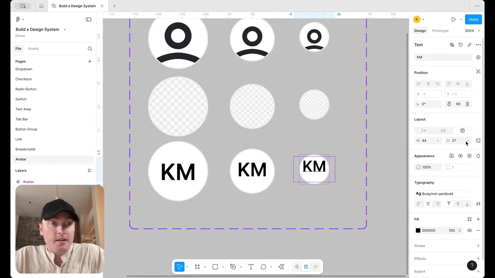
아바타 몇 개를 오토 레이아웃으로 묶고 간격을 −4로 주면 서로 겹쳐요. 마지막에 '+12'를 두면 여러 사람이 속한 그룹이라는 표시가 돼요. 아바타 옆에 이름을 붙인 avatar label도 같은 방식으로 만들어요. 이름 예시는 축구 선수 콜 파머예요.
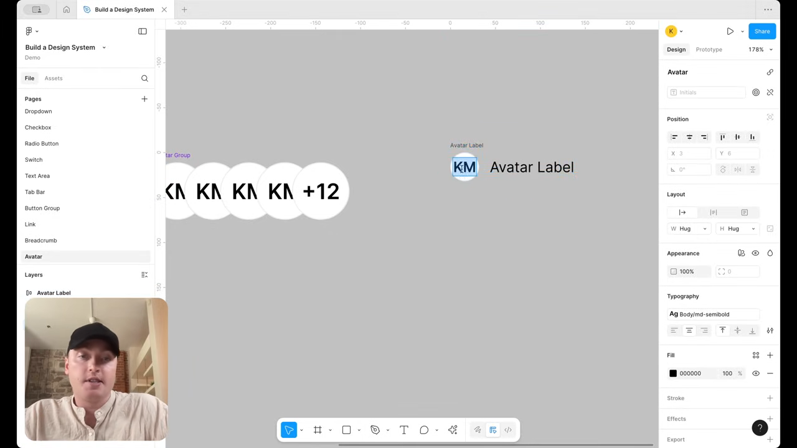
태그
여기서 만드는 건 사용자가 눌러서 고르는 '인터랙티브 태그'예요. 'Tag' 글자와 플러스 아이콘, border/action 테두리, 반경 4로 시작해요. selected가 되면 배경이 surface/action으로 채워지고, 플러스가 닫기(X) 아이콘으로 바뀌어요.
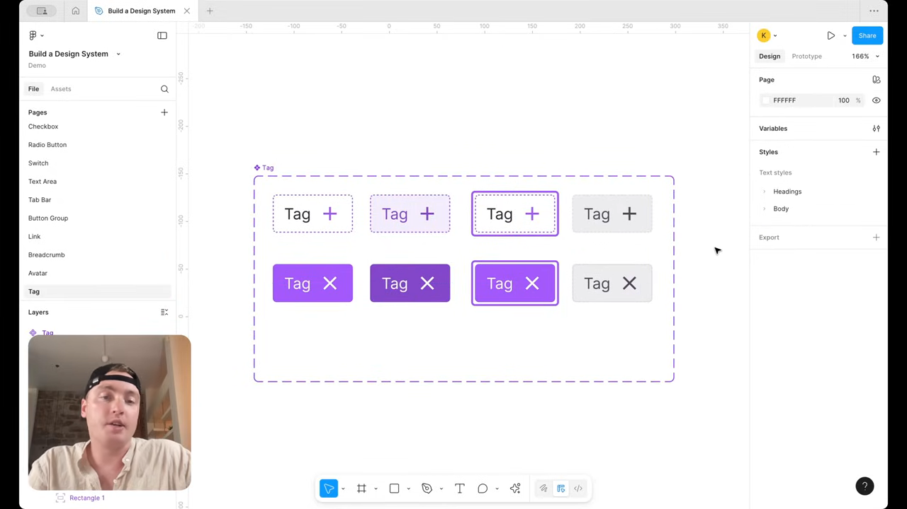
로더
로더는 생김새가 여러 가지라 발표자는 '못생긴' 기본형을 만들어요. 64×64 프레임 안에 원 여러 개를 둥글게 배치하고 surface/action을 칠해요. 원들의 제약을 scale로 두면, 크기 베리언트(64, 48, 32)를 만들 때 원들이 함께 줄어요.
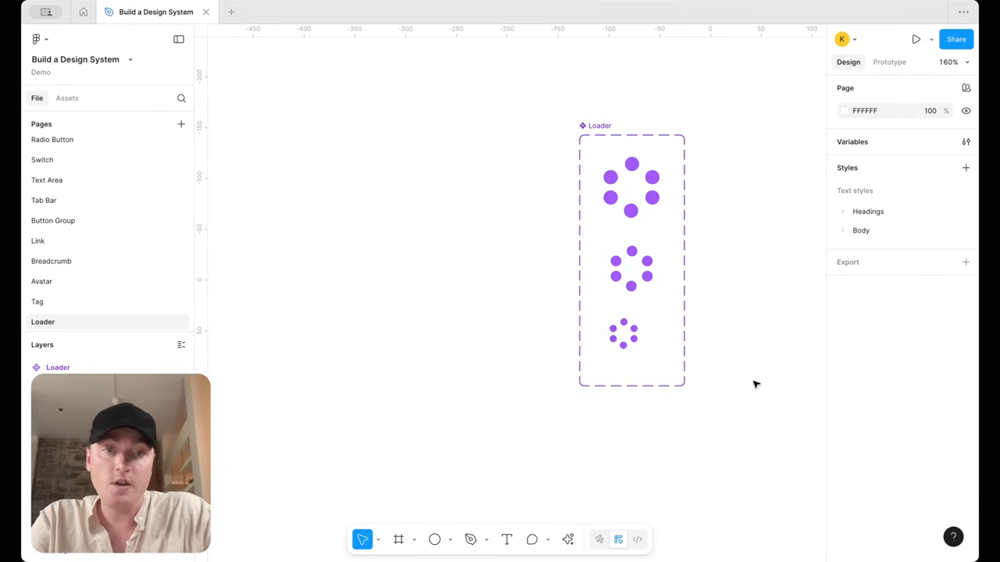
요령도 하나 보여 줘요. 점 네 개 중 하나만 보라인 베리언트를 만들고, 보라 점이 한 칸씩 옮겨 가는 베리언트를 더 만든 뒤 '200ms 뒤에 다음 베리언트로' 프로토타입을 걸어요. 미리보기에서 점이 차례로 깜박이는 로더가 돼요.
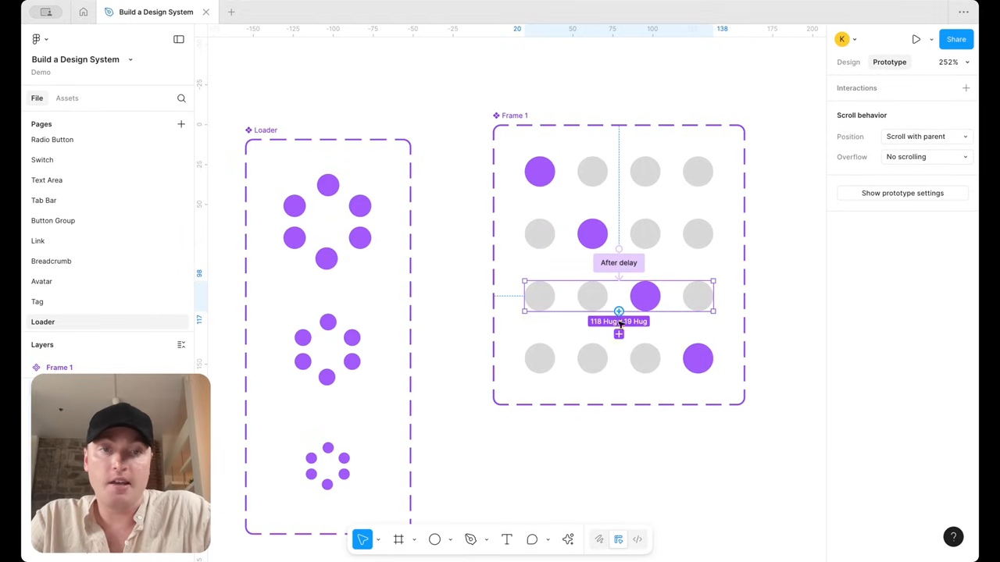
배지
배지는 쇼핑 카트 아이콘 위의 '99'처럼 개수를 보여 주는 작은 원이에요. 글자는 body small semibold, 너비와 높이를 24×24로 고정하고 반경 round를 줘서 늘 깔끔한 원이 되게 해요. Status는 default·error·success·information·warning이에요. 처음엔 surface/error를 썼는데 너무 옅어서, 배지처럼 작은 요소는 icon/error 같은 진한 색에 text/on-action 글자를 쓰자고 바꿔요.
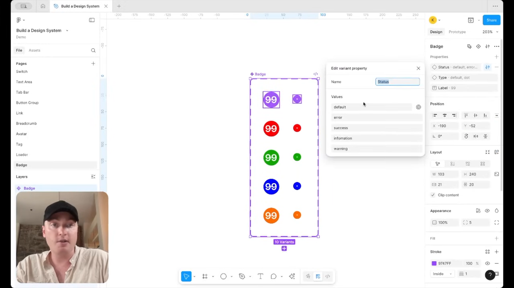
진행 막대와 adjust gap 요령
진행 막대는 이 영상에서 발표자가 가장 자랑하는 요령이 나오는 곳이에요. 보통은 채워진 부분의 너비를 바꾸려면 인스턴스를 떼어 내야 해요. 대신 크기가 0×0인 원 두 개를 오토 레이아웃으로 묶은 'adjust gap' 프레임을 채움 막대로 써요. 원은 크기가 없으니, 프레임의 너비는 원 사이 '간격' 값과 같아져요.
트랙은 200×8로 시작했다가 4px 두께로 얇게 바꿔요. 아래 화면의 세 막대는 같은 컴포넌트에서 간격만 다르게 준 인스턴스예요. 위에 'Completion: 80%' 같은 라벨을 붙이고 켜고 끄는 속성도 달아요.
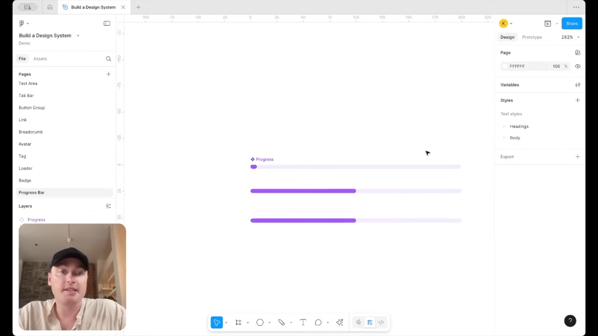
진행 원은 원의 호(arc) 조절점을 끌어 모양을 만들어요. 옅은 surface/action-hover-light 원 위에 surface/action 호를 겹치고, 가운데에 '80%' 글자를 둬요. 로더처럼 제약을 scale로 둬서 64와 48 크기 베리언트를 만들고, 안쪽 글자 크기만 따로 맞춰요. 발표자는 이걸 로더로 써도 된다고 해요.
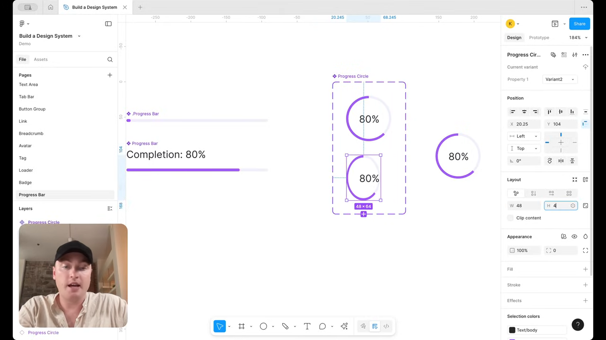
한눈에 보는 베리언트 구성
섹션 6부터 여기까지 만든 컴포넌트의 베리언트를 모으면 이래요. 거의 모든 컴포넌트가 같은 Status 네 가지를 공유한다는 점이 이 시스템의 일관성이에요.
| 컴포넌트 | Status | Type·기타 | 조합에 쓴 컴포넌트 |
|---|---|---|---|
| 버튼 | default·hover·focus·disabled | default·outline·transparent | — |
| 라벨 | — | default·required | — |
| 필드 | default·hover·focus·disabled | filled·not filled(개념만) | — |
| 인풋 | 필드를 따라감 | default·email | 라벨, 필드 |
| 메뉴 아이템 | default·hover·disabled | unselected·selected | — |
| 체크박스·라디오·스위치 | default·hover·focus·disabled(+error) | selected·unselected | 라벨 래퍼 |
| 탭 아이템 | default·hover·focus·disabled | unselected·selected | — |
| 버튼 그룹 아이템 | default·hover·selected·disabled(하나로 합침) | — | |
| 링크 | default·hover·focus·disabled | basic·inline | — |
| 브레드크럼 | — | — | 링크 |
| 아바타 | — | icon·image·initials × 64·48·32 | 그룹, 라벨 |
| 태그 | default·hover·focus·disabled | unselected·selected | — |
| 로더·진행 원 | — | 크기 64·48(·32) | — |
| 배지 | default·error·success·information·warning | default·dot | — |
조합 컴포넌트: 스낵바·캐러셀·테이블
마지막 구간은 지금까지 만든 작은 컴포넌트를 조합하는 컴포넌트예요. 아래 그림은 영상에서 실제로 어떤 컴포넌트가 어디에 들어갔는지를 모은 거예요.
flowchart LR L["라벨"] --> I["인풋"] F["필드"] --> I L --> TA["텍스트 영역"] LK["링크"] --> BC["브레드크럼"] LK --> SB["스낵바"] PB["진행 막대"] --> SB AV["아바타"] --> AG["아바타 그룹·라벨"] B["버튼"] --> BI["버튼 아이콘"] B --> TB["테이블"] LK --> C["셀"] C --> TB
스낵바
스낵바는 화면 구석에 잠깐 떠서 알려 주는 메시지 상자예요. 제목(body large semibold, text/action), 설명(body medium), 'Learn more' 링크, 왼쪽 info 아이콘, 오른쪽 닫기 아이콘을 모아요. 닫기 아이콘은 콘텐츠를 fill로 늘려 늘 오른쪽 끝에 붙여요. 패딩 18·24, 반경 8이에요.
바닥에는 진행 막대를 절대 위치로 붙여요. 제한 시간이 줄어드는 걸 보여 주는 용도예요. 제약을 아래쪽과 좌우로 걸어서 스낵바를 늘려도 막대가 바닥에 붙어 따라 늘어요. 아래 화면은 색만 바꾼 네 가지 베리언트예요. 위에서부터 default, success, warning, error 계열이에요.
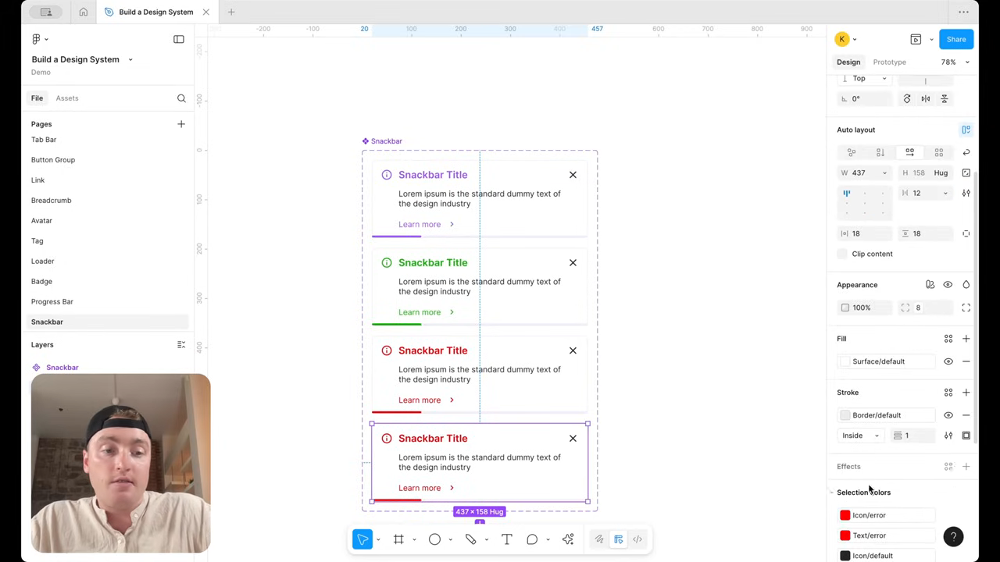
발표자는 스낵바가 여러 atom 컴포넌트를 재사용하는 컴포넌트라서, 면접에서 이걸 만들 줄 안다고 보여 주면 좋다고 해요. 상태색은 success 면이 너무 옅어서 아이콘만 icon/success로 바꾸는 식으로 '되게 만들어요'.
캐러셀과 버튼 아이콘
캐러셀은 이미지 사이를 넘기는 화살표와 진행 바로 이뤄져요. 화살표 아이템은 chevron 아이콘에 둥근 border/action 테두리, 패딩 8이에요. Status 네 가지에 Direction(left·right)을 더해 아이콘만 바꿔요. 진행 바는 옅은 트랙 안에 surface/action 막대를 겹치고, 막대 제약을 scale로 둬서 트랙을 늘리면 함께 늘게 해요.
버튼 아이콘은 닫기처럼 아이콘만 있는 버튼이에요. 버튼 컴포넌트를 복제해 라벨과 오른쪽 아이콘을 지우고, 속성도 icon 하나만 남겨요. 버튼 높이와 맞추려고 크기를 36×36으로 고정해요.
테이블
발표자는 '피그마는 테이블용으로 만들어진 도구가 아니다'라고 못 박고 시작해요. 그래서 작은 단위부터 차곡차곡 쌓아요.
- 셀 아이템 — 셀 안에 들어갈 내용이에요. 기본 글자(copy), 링크, 아이콘 세 개를 둔 action 같은 베리언트를 둬요. 이름 앞에 마침표를 붙여 발행에서 빼요.
- 셀 — 셀 아이템을 패딩 12로 감싸요. 중첩 인스턴스를 켜서 셀 아이템을 바꿔 끼울 수 있게 하고, Type을 header(medium semibold, 옅은 배경)와 content로 나눠요. 아래쪽에만 border/default 선을 그어요.
- 열(column)과 행(row) — 셀을 세로로 쌓으면 열, 가로로 놓으면 행이에요. 테이블은 열로 짜거나 행으로 짜거나 둘 중 하나예요.
- 열 테이블과 행 테이블 — 열이나 행을 여러 개 이어 붙이고, 바깥에 border/default 테두리와 반경 8을 줘요.
- Table type 컴포넌트 — 두 테이블을 하나의 컴포넌트 세트로 합쳐 column·row로 바꿔 끼우게 해요.
열마다 너비가 달라야 하는 게 테이블의 골칫거리예요. 보통은 인스턴스를 떼어 내야 너비를 바꿀 수 있어요. 여기서 진행 막대의 adjust gap 요령을 다시 써요. 열 컴포넌트 안에 크기 0인 원 두 개로 된 adjust gap 프레임을 넣고, 셀들을 fill로 늘려요. 그러면 간격 값만 200으로 바꿔도 열 전체가 넓어져요. 발표자는 '이걸 면접에서 보여 주면 합격'이라고 할 만큼 공들인 요령이라고 해요.
행 테이블에는 이 요령을 쓸 수 없어요. 그래서 행의 셀은 모두 130 너비로 맞춰요. 두 테이블을 합친 Table type 컴포넌트는 아래 화면처럼 Type 속성으로 column과 row를 오가요.
마지막으로 실제 쓰임새를 보여 줘요. 'Our Advisors' 같은 H4 제목, 오른쪽 끝의 다운로드·엑셀 내보내기 버튼을 붙인 바깥 프레임에 Table type 인스턴스를 넣어요. 중첩 인스턴스를 켜 두면 이 상태에서 열 테이블과 행 테이블을 바꿔 끼울 수 있어요.
라이브러리 발행과 구독
발행은 '이제 다른 사람이 이 디자인 시스템을 써도 된다'는 신호예요. 발행하지 않으면 이 파일 안에서만 컴포넌트를 쓸 수 있어요. 파일 이름 옆 메뉴에서 Publish library를 누르면 아래 창이 떠요. Variable collections 목록에 Alias(65), Brand(76), Mapped(39), Responsive(31) 네 컬렉션이 '변경된 변수' 개수와 함께 보여요.
이 창에서 발행할 컴포넌트를 확인하고, 올리지 말아야 할 것은 빼거나 나중에 내릴 수 있어요. 첫 발행은 시간이 꽤 걸려요. 발표자 파일에는 Material 아이콘 수천 개가 있고 아이콘마다 베리언트가 네 개씩 있어서 10~15분이 걸렸대요. 발행은 피그마의 유료 팀 공간에서만 할 수 있다는 점도 짚어요.
다른 파일에서 쓰려면 구독해요. 피그마 메뉴에서 Libraries를 열고, Teams나 UI kits에서 이 시스템을 찾아 구독하면 그 파일에서 컴포넌트와 변수를 쓸 수 있어요. 아래 화면은 Libraries 창에서 'This file'을 연 모습이에요. 발행된 스타일과 컴포넌트가 미리 보여요.
시스템을 고친 뒤 다시 발행하면 바뀐 컴포넌트만 목록에 떠요. 발표자는 버튼 반경을 4로 바꾸고 발행 창을 열어, 버튼과 몰래 손본 테이블만 올라오는 걸 보여 줘요. 디자인 시스템 관리는 생각보다 단순하다는 말로 영상을 마쳐요.